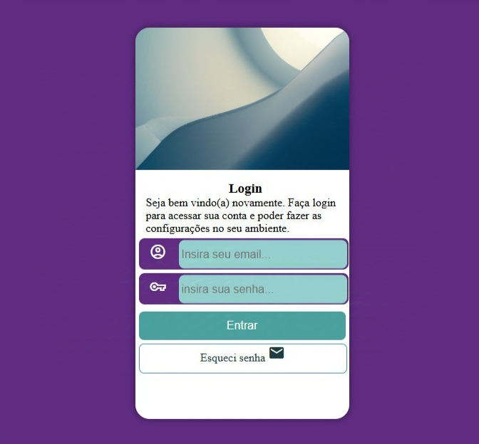
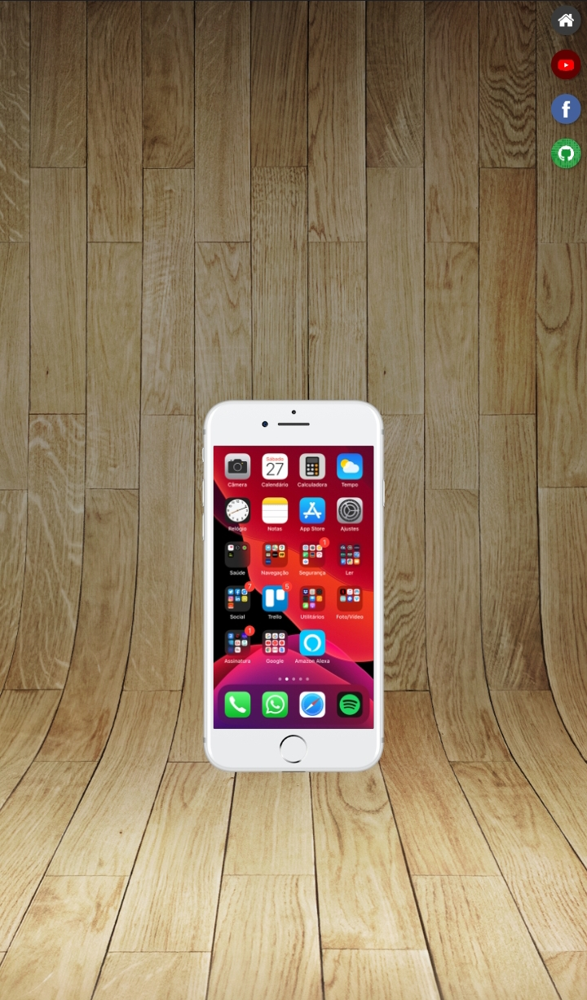

Sobre mim
olá meu nome é Eric, Eu sou um adolescente de 13 anos que busca um futuro na area de progamação, mesmo com dificuldades sem computador, sem internet estavel, e sem cursinhos eu estou indo em busca de um futuro melhor para mim e minha familia. Eu nasci no interior da Paraiba e mesmo assim não fui impedido de olhar esta area magnifica que é a area de TI.
Projetos.
Projeto 1: tela de login responsiva.
Neste projeto eu busquei fazer uma tela de login enquanto aprendia media queries e flexbox, este projeto não foi muito desafiador pois eu ja tinha mais experiencia quando fui fazer este projeto. neste projeto as tecnologias usadas foram: HTML e CSS
Ver site ver codigoProjeto 2: Projeto-Social.
Eu apelidei este projeto de projeto social pois eu fiz um "celular" com redes sociais ao lado e ao apertar as redes sociais no celular "abre" o aplicativo, eu utilizei as imagens do canal curso em video pois eu estava aprendendo iframes. Neste projeto eu utilizei HTML e CSS.
Ver site ver codigoHabilidades
eu tenho habilidades em HTML e CSS, porem eu comecei a estudar javascript recentemente para poder fazer projetos mais avançados e melhorar na minha futura carreira. eu tambem sei ingles nivel A2~B1 e isto pode ser interessante dependendo da empresa. pretendo ser um progamador full-stack pois eu ainda tenho muito tempo para me tornar um.


Contatos
Se você quiser entrar em contato comigo pode usar minhas redes sociais ou ver meus projetos mais a fundo e me conhecer mais.